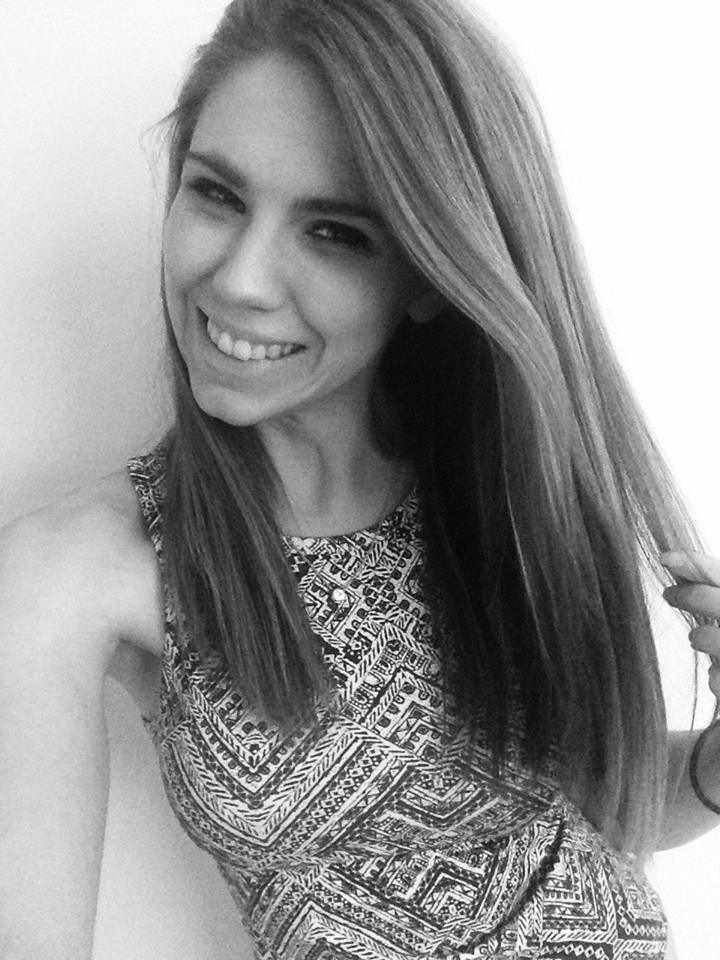

They are the beginnings of stories, and the endings of others. But this is a very significant beginning, following the end of a long stream of sub stories — novellas, even. Moments that lead to the here and now that is my wonderful life.
Correct me if I'm alone in this, but I believe everyone experiences moments of transition. It could be a five minute conversation that sparks epic realization, a day of eventful hours, or a silent reflection. It is any fraction of time when it dramatically dawns on you that life is about to change.
I'm starting a new chapter in my career as a fashion editor in the city. This is the dream job. The big break. The foot-in-the-door. If you would have told me ten years ago that I would be working in an industry completely enthralled in one's physical appearance, I would have laughed before heavily insisting you might have been mistaken.
Growing up, I had little to no interest in fashion or makeup beyond my mother's lipstick collection. I knew what "pretty" was, and the obvious effect cosmetic enhancement can have on a woman. However, I was a preteen perfectly content in my baggy tees and jeans, burying myself in chapter books and notebook scribbles of fantastical worlds or diary entries.
It wasn't until junior year of high school that I became pretty. Similar to Jenny Han's best selling series, only unlike protagonist Isabel Conkin, it took more than a summer season to come even remotely close to the description.
Flash forward a few years and I enrolled in a four year college to study literature. I had no plans of becoming a teacher. Instead, the plan was to land a job as a full time columnist with a young adult book series as a side gig. Then junior year happened, and before I knew it I was accepting an internship with Lucky Magazine.
I was in control of the beauty closet twice a week, shadowing the magnificent team under Jean Godfrey-June. I learned the difference between drugstore and Dolce, dry shampoo and hairspray. I was taking home bags of product and spending hours figuring out hwat to do with them all.
Senior year I was back in the beauty closet, this time for Marie Claire. My daily routine consisted of fact checking for article accuracy and calling in dozens of products daily. Free cosmetics, exposure to the inner workings of successful glossys. I was living the life, but I still had this insatiable desire to expand my knowledge outside the beauty cap.
I graduated in May 2014 with a bachelor's in English literature, concentrating in creative writing. For the next year and a half I balanced babysitting gigs and serving with internships at WGSN and Fashionista before moving on to freelance for Bustle and SheKnows full time. Somehow I’ve managed to maintain the loveliest long distance relationship with my university sweetheart, a satisfying social life, healthy eating and exercise habits, and an impeccable work ethic.
So I guess the only question I've left you with is, why blogging? Why (life)Styled by Julia?
Here's the best answer I can give you. Everyone has a story. This is a space for my own. A digital documentation of life happenings and self exploration through my career and style evolution.
Everyone has a story. Won't you follow along with mine?